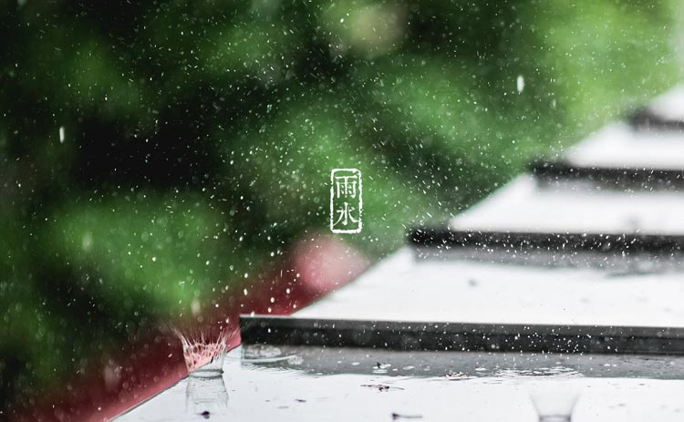

饺子里蕴含的“年”的香味一直没散。记忆里的春节常常是冰天雪地和着一碗热气腾腾的饺子，但现在年的脚步刚刚跨过，天气暖和的迹象就越来越明显了，眼看着雨水节气就要到了。雨水是24节气中的第2个节气一般来说，太阳黄经达330度时，就算作是二十四节气的雨水。从雨水这天开始，气温回升、冰雪融化、降水增多，故取名为雨水。春色渐渐显露出撩人的风貌，小鸟儿叽叽喳喳飞来飞去，一切好似无比自然的变得潮湿了。似乎是从天而降的温暖的汗珠，大地由枯黄到遍布恣意的绿，那绿又由浅淡渐渐变得浓厚。
那一句“好雨知时节，当春乃发生”，既说出了春雨的“发生”，又含蓄地表达出了作者热切盼望春雨降临的焦急心绪。雨水一到，全年的农业周期就要正式开始了，越冬作物开始返青，需要雨水，又有俗语说“春雨贵如油”。
我国古代将雨水分为三候：“一候獭祭鱼；二候鸿雁来；三候草木萌动。”此节气，水獭开始捕鱼了，将鱼摆在岸边如同先祭后食的样子。几天后，大雁开始从南方飞回北方。在“润物细无声”的春雨中，草木将渐渐开始抽出嫩芽，春天就这样到来了。据《本草纲目》记载：“立春节雨水，其性始是春升生发之气，故可以煮中气不足、清气不升之药。古方妇人无子，是日夫妇各饮一杯，还房有孕，亦取其资始发育万物之义也”。对此小编只能说，这真是比某8同城还要神奇的雨水啊！居然能治好不孕不育！
“雨水节，回娘家”是流行于川西一带汉族的节日习俗。到了雨水节气，出嫁的女儿纷纷带上礼物回娘家拜望父母。生育了孩子的妇女，须带上罐罐肉、椅子等礼物，感谢父母的养育之恩。久不怀孕的妇女，则由母亲为其缝制一条红裤子穿到贴身处，据说这样可以尽快怀孕。
“拉保保”是四川一些地区的民间习俗。旧社会人们迷信命运，为儿女求神问卦，看自己的儿女好不好带。有独子者更怕孩子夭折，所以一定要让自己的孩子拜个干爹。按小的生辰年月日时同、金、木、水、火、土找算命先生算算命上相合相克的关系，如果命上缺木，拜干爹取名字时就要带木字，才能保儿子长命百岁。
1、雨水节气之后降水会明显增多，出门记得带雨伞；
2、雨水节气养生要保持五味不偏，尽量少吃辛辣食品，着重养护脾脏。